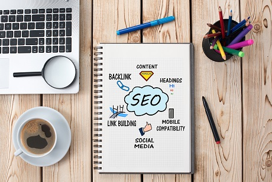

Search Engine Optimization
The dominance of mobile internet use means that users are searching for the right business as they
travel, shop, or sit on their couch at home. Search Engine Optimization (SEO) allows you to increase
your visibility and find the right customers for your business.
Online Reputation Management
The web is full of opinions, and some of these can be negative. Social media allows anyone with an
internet connection to say whatever they want about your business. Online Reputation Management gives
you the control over what potential customers see when they search for your business.
Social Media Marketing
Social media continues to have a sizable influence on buying habits. Social media marketing helps you
determine which platforms are suited to your brand, using analytics to find the right markets and
increase your lead generation.